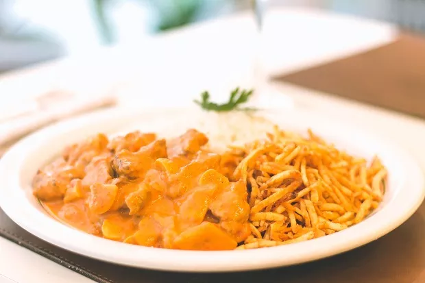
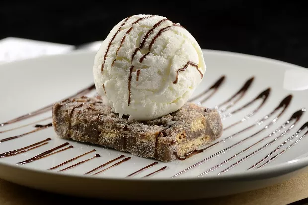

Hambúrguer dos Deuses

- Pão de Hambúrguer
- Carne Moída com 20 a 25% de gordura (Sugestão: Fraldinha)
- Sal a gosto
- Queijo Prato
- Cebola
- Azeite
- Açúcar Mascavo
- Maionese
- Fatias de Bacon
Ponha o hambúrguer na base do pão, o bacon já previamente preparado, em seguida a cebola caramelizada e por último a maionese na tampa do pão.
Strogonoff do Kame
- 300g de Mignon Picado para Strogonoff
- 1 Cebola Média Picada
- 1 Colher (sopa) de Manteiga
- 100g de Cogumelo Paris Fresco cortado em lâminas
- 2 Colheres (sopa) de Catchup
- 1 Pitada de Noz Moscada
- 1 Caixinha de Creme de Leite
- 1 Colher (sopa) de Mostarda Dijon
- 1 Colher (sopa) de Molho Inglês
- 1 Colher (café) de Páprica Defumada ou Picante
- Sal a gosto
- 1 Dose de Whisky para finalizar
Pique a cebola em pequenos pedaços. Aqueça uma frigideira e coloque a manteiga. Refogue a cebola picada. Deixe dourar bem. Enquanto isso, corte os cogumelos em lâminas. A seguir, inclua a carne já cortada para strogonoff na refoga e deixe fritar. Tempere com sal e mexa bem. Acrescente uma pitada de noz moscada ralada na hora e o whisky para flambar. Deixe evaporar um pouco a bebida alcóolica. Inclua a páprica e misture. Coloque a mostarda, o catchup e o molho inglês e misture cuidadosamente. Acrescente os cogumelos cortados e deixe cozinhar um pouco. Por fim, quando os ingredientes estiverem chegando no ponto, inclua o creme de leite e mexa tudo. Deixe no fogo por alguns minutos para cozinhar os cogumelos. Para acompanhar sirva com arroz branco e chips de batata doce.
Super Palha Italiana
- 2 Latas de Leite Condensado
- 1 Lata de Creme de Leite com o Soro
- 1 Colher de Sopa de Manteiga
- 3 Colheres de Sopa de Chocolate em Pó
- 1 Pacote de Bolacha Maizena
Quebre os biscoitos de maisena em pedaços pequenos e reserve. Em uma panela, acrescente o leite condensado, a manteiga e o chocolate em pó. Em fogo baixo, mexa até a mistura começar a desprender do fundo da panela. Acrescente o creme de leite e mexa bem. Acrescente os pedacinhos de biscoito (com farelo e tudo) à mistura e mexa até que todo o biscoito esteja coberto com o creme. Despeje a mistura em uma tigela untada com manteiga e espere esfriar. Corte em quadrados, polvilhe com açúcar e sirva com uma bola de sorvete de sua preferência.